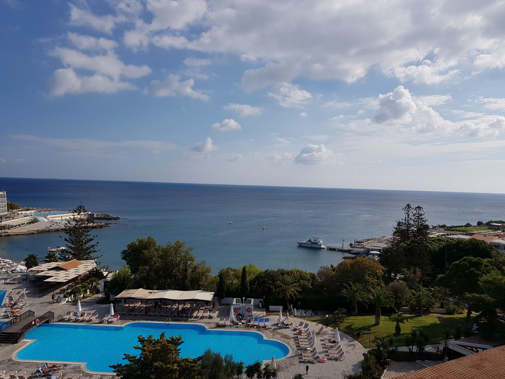

OM BLOGGEN
Hej och välkommen till min reseblogg! Bloggen startade jag för att dela min passion om resor och för att tipsa andra om härliga platser att åka till i världen. Här kommer du kunna läsa om olika destinationer och få restaurangtips! /Ida
NORGE
Bilder på resa från Ålesund mot Geiranger via bilfärja på Geirangerfjorden där vi bland annat åkte förbi vattenfallet "De syv Søstrene". Hela fjorden är UNESCO-skyddad och man får verkligen uppleva fantastisk natur med vackra vattenfall och höga fjälltoppar. Väl framme i Geiranger rekommenderas deras lokalproducerade öl från Geiranger Bryggeri som ligger i ett båthus. Passa också på att äta närproducerad god mat och sedan köra bil tillbaka till Ålesund längs med fjorden.

Bilder från Rhodos när jag var där med hela tjocka släkten i oktober. Rhodos har både puls och trevliga människor, samtidigt som det är en idyllisk ö med mycket historia. En promenad i gamla stan bland kullerstenar och vinrankor är ett måste. En gyros i Rhodas stad är heller aldrig fel.
